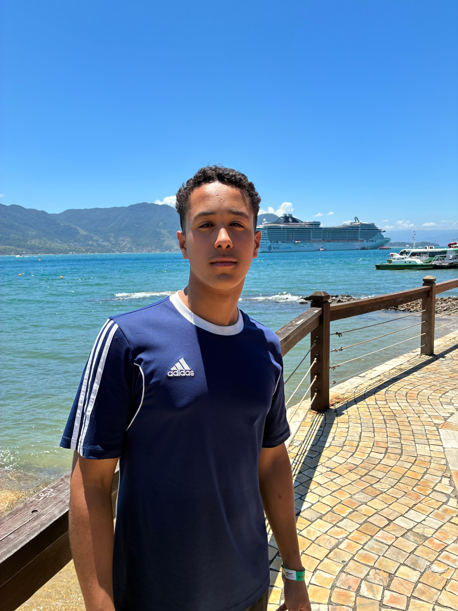

Interdisciplinar
"O máximo de resultado com o mínimo de desperdício" - Mottainai
Conheça nosso projeto!Estudante de desenvolvimento da Germinare Tech. Tenho 16 anos, moro no bairro do Morro Doce e trabalho na PicPay, como auxiliar de desenvolvimento.

"O máximo de resultado com o mínimo de desperdício" - Mottainai
Conheça nosso projeto!
Gosto muito de comer, e minha comida favorita é farofa, ainda mais se for farofa de feijão.
Receita de farofa de feijão
Gosto muito de animais, um dos meus melhores passatempos.